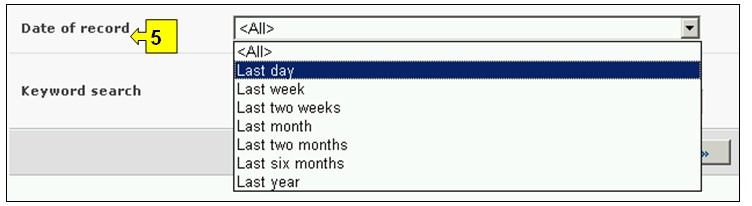
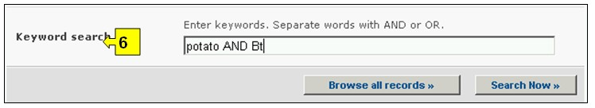
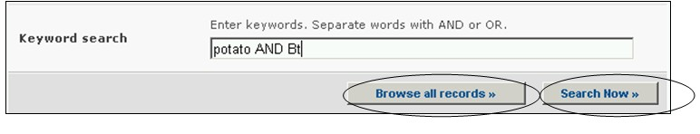
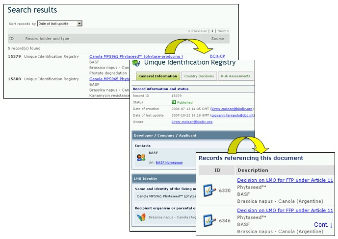

Поиск информации о ЖИО, генах и организмах можно осуществлять, используя соответствующие ссылки в выпадающем меню раздела навигационной панели Finding Information (Поиск информации), или в меню в левой части страницы Поиск информации, или используя ссылку ЖИО, гены и организмы в тексте страницы.
На странице Поиска ЖИО, генов и организмов можно осуществлять поиск в следующих реестрах:
-
в Реестре уникальный идентификации ЖИО, который содержит основную информацию обо всех живых измененных организмах, зарегистрированных в МПБ, каждая запись реестра включает уникальный идентификационный код ЖИО (если присвоен), сведения о трансформационных событиях, генетических модификациях и ссылки на все решения, касающиеся этого организма;
-
в Реестре генов, который содержит краткую информацию о встроенных генах и характеристиках генетических изменений ЖИО;
-
в Реестре организмов, который содержит основную информацию о родительских и реципиентных организмах и организмах-донорах, имеющих отношение к ЖИО, зарегистрированным в МПБ.
На странице Поиска ЖИО, генов и организмов предусмотрены шесть с полей с критериями уточнения поиска. Каждое из полей содержит выпадающее меню, позволяющее выбрать необходимый критерий. По умолчанию (если критерий не выбран) используется первый пункт меню. Справа от полей выбора критериев расположены кнопки, позволяющие перейти в режим выбора нескольких критериев. В этом режиме возможно добавление критериев поиска, путем выбора необходимых критериев при удерживании нажатой кнопки Ctrl (Control) на клавиатуре.

Рисунок 46
Меню поля 1 [Реестры] содержит названия трех реестров: ЖИО, генов и родительских организмов и организмов-доноров.

Рисунок 47
Меню поля 2 [Тип живого измененного организма] позволяет применить соответствующие фильтры, связанные с определенными аспектами ЖИО, что позволяет сузить круг поиска до решений, отвечающим выбранным критериям поиска. Используются следующие категории фильтров: (1) уникальный идентификатор ЖИО (например, MONØØ81Ø-6), (2) встроенный или измененный признак (например, устойчивость к глифосату – Glyphosate tolerance), (3) использованный метод (например, агробактериальная трансформация – Agrobacterium-mediated), (4) общепринятое название родительского организма (например, кукуруза), (5) научное название родительского организма (например, Zea mays) и (6) заявитель (текстовое поле – например, Monsanto).
Выбор одного или нескольких фильтров в выпадающем меню открывает соответствующие дополнительные поля, которые содержат свои выпадающие меню с вариантами, связанными с выбранными фильтрами. Выбрать несколько вариантов фильтра можно, использую клавишу Ctrl (Control), т.е. путем выбора необходимых вариантов в меню при удерживании нажатой кнопки Ctrl (Control) на клавиатуре

Рисунок 48
Меню поля 3 [Тип гена] позволяет применить фильтры к названию гена и(или) к его характеристике, что позволяет сузить круг поиска до решений, отвечающим выбранным критериям поиска.
Выбор одного или обоих фильтров в выпадающем меню открывает соответствующие дополнительные поля, которые содержат свои выпадающие меню с вариантами, связанными с выбранными фильтрами. Выбрать несколько вариантов фильтра можно, использую клавишу Ctrl (Control), т.е. путем выбора необходимых вариантов в меню при удерживании нажатой кнопки Ctrl (Control) на клавиатуре

Рисунок 49
Меню поля 4 [Тип организма] позволяет применить фильтры к обычному названию организма и(или) к его научному названию, что позволяет сузить круг поиска до решений, отвечающим выбранным критериям поиска.
Выбор одного или обоих фильтров в выпадающем меню открывает соответствующие дополнительные поля, которые содержат свои выпадающее меню с вариантами, связанными с выбранными фильтрами. Выбрать несколько вариантов фильтра можно, использую клавишу Ctrl (Control), т.е. путем выбора необходимых вариантов в меню при удерживании нажатой кнопки Ctrl (Control) на клавиатуре

Рисунок 50
Меню поля 5 [Дата предоставления сведений] позволяет сузить круг поиска сведений в соответствии с датой их предоставления МПБ. Выпадающее меню содержит ряд временных периодов для оптимизации поиска сведений, предоставленных за определенное время (например, за последний день, за последний месяц, за последний год и т.д.).

Рисунок 51
Поле 6 [Ключевые слова] предоставляет возможность использования ключевых слов для сужения круга поиска. Пользователь может использовать стандартный синтаксис (AND/OR) для комбинации ключевых слов или корневых частей слов (например, «Import OR Export», «координ* AND центр»). В результате поиска с использованием ключевых слов будут представлены только сведения, содержащие конкретные ключевые слова, но не их синонимы (например, в результате поиска с использованием ключевого слова «Maize» будут представлены сведения, содержащие только это слово, и не представлены, содержащие его синонимы «Corn» и «Zea mays»)

Рисунок 52
На странице поиска расположены три кнопки, инициирующие процедуру поиска. Кнопки Search Now (Искать), расположенные вверху и внизу формы поиска, позволяют осуществить поиск, используя выбранные критерии в полях функции поиска. Результаты поиска будут расположены в алфавитном порядке по названию страны (по умолчанию). Кнопка Browse all records (Просмотреть все записи) дает возможность просмотреть все сведения этой базы данных.

Рисунок 53
Страницы Результатов поиска имеют функцию сортировки, расположенную вверху страницы, которая может быть использована для сортировки результатов в соответствии с параметрами, имеющими отношение к данной категории информации. Необходимо отметить, что параметры сортировки результатов изменяются в зависимости от критериев поиска.

Рисунок 54
Пример. Предположим, что необходимо найти все измененные формы рапса (canola), созданные фирмой BASF для улучшения деградации фитиновой кислоты (phytate). Для этого необходимо (1) выбрать функцию Фильтровать по заявителю в поле Тип живого модифицированного организма и ввести критерий BASF в поле Заявитель, (2) затем выбрать функцию Фильтровать по свойствам в поле Тип гена и указать критерий Деградация фитиновой кислоты в поле Интродуцированные или измененные свойства, (3). в поле Тип организма выбрать вариант Фильтровать по общему названию и выбрать Рапс (Rapeseed) в поле Родительский организм.
После нажатия кнопки Search Now (Искать) будут представлены результаты поиска в виде списка кратких сведений. Подробную информацию о каждом документе можно просмотреть, используя ссылку в заголовке документа.

Рисунок 55

Рисунок 56